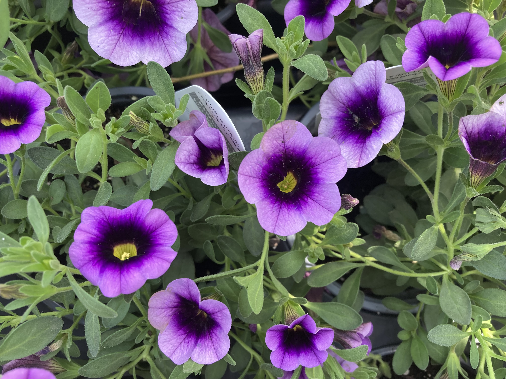
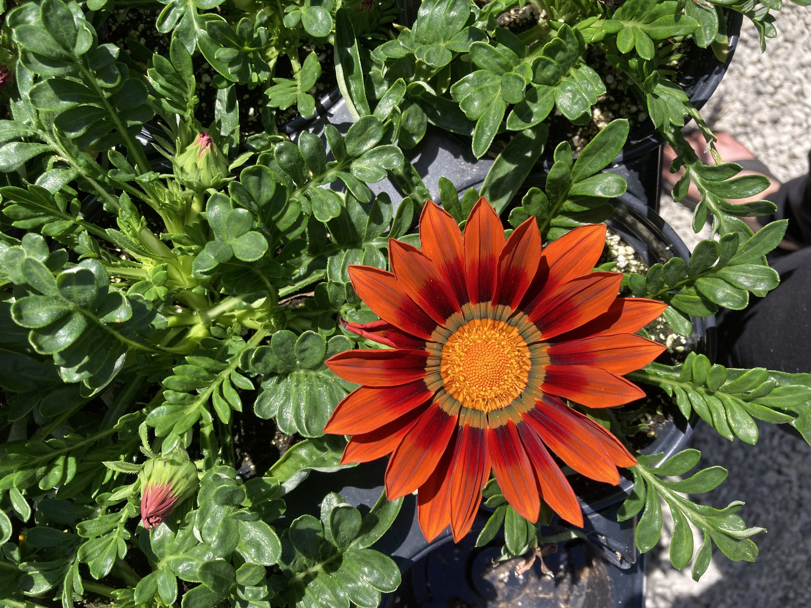
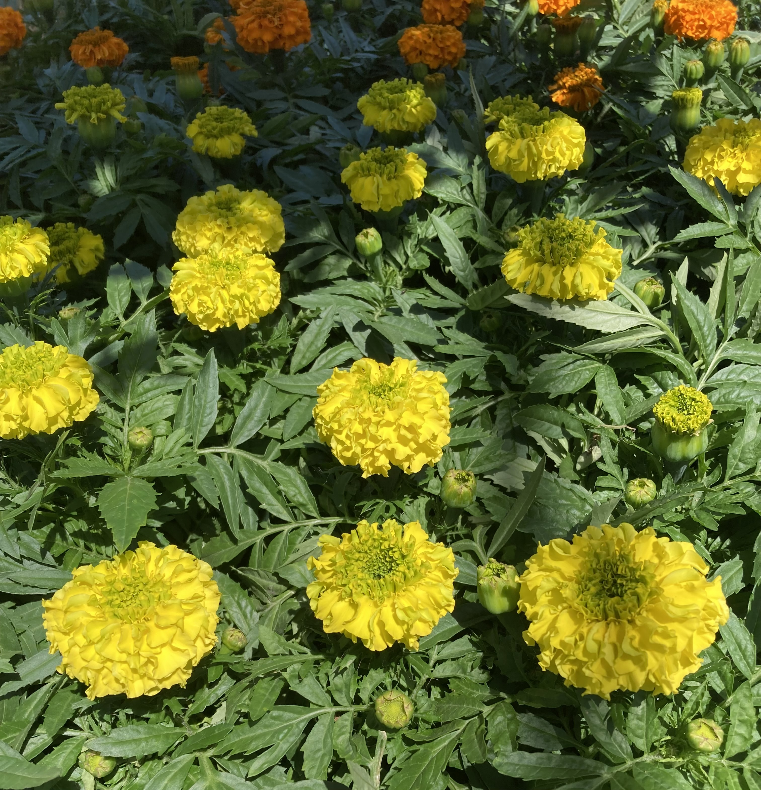
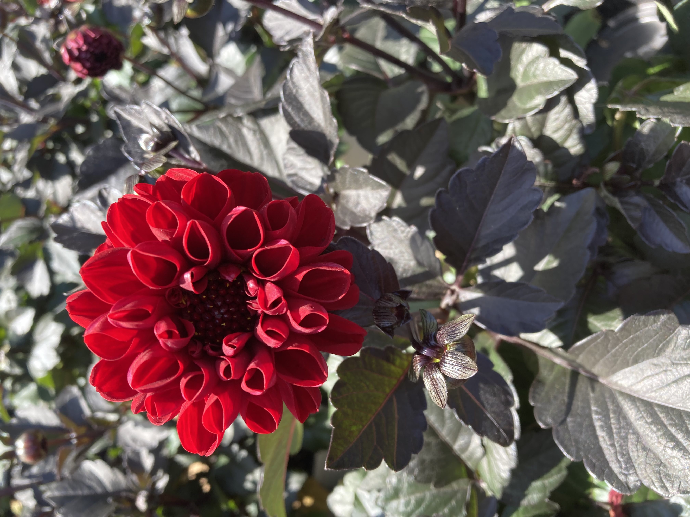
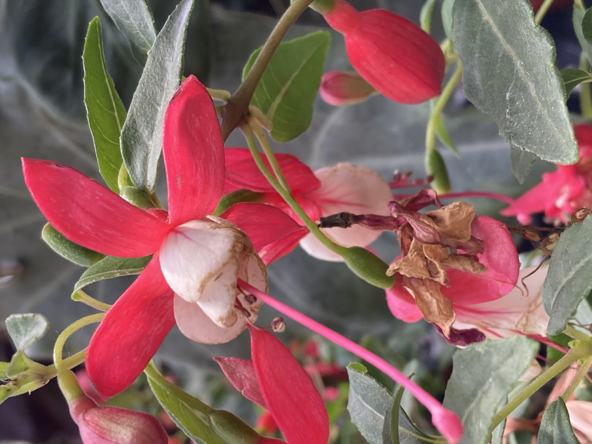

Annuals bring bright, seasonal beauty to your garden. These fast growers live for one season and reward you with non-stop color, ideal for containers, borders, and sunny beds.
Calibrachoa (Million Bells)
- Thrives in full sun (6+ hours)
- Well-draining, slightly acidic soil
- Consistent moisture; avoid sogginess
- Heavy feeder: fertilize every 1-2 weeks
- No deadheading needed
- Annual in Zone 6a
- Watch for aphids and powdery mildew
Gazania (Treasure Flower)
- Full sun; flowers close at night
- Sandy, well-drained soil
- Low water; drought-tolerant
- Light fertilizer monthly
- Deadhead to prolong blooms
- Annual in Zone 6a
- Generally pest-free
African Marigold
- Full sun for best blooms
- Tolerates poor, well-drained soil
- Water when dry; dislikes soggy roots
- Rarely needs fertilizer
- Deadhead to rebloom
- Annual in all zones
- Repels garden pests naturally
Dahlia
- Full sun; afternoon shade in peak heat
- Rich, composted soil
- Water deeply; avoid crown rot
- Fertilize every 2-3 weeks
- Pinch and deadhead for more blooms
- Annual in Zone 6a
- Watch for slugs and mildew
Fuchsia
- Bright shade or part sun
- Rich, well-draining potting mix
- Consistent moisture; never fully dry
- Feed every 1-2 weeks
- Deadhead and pinch to shape
- Annual in Zone 6a
- Watch for whiteflies and mites